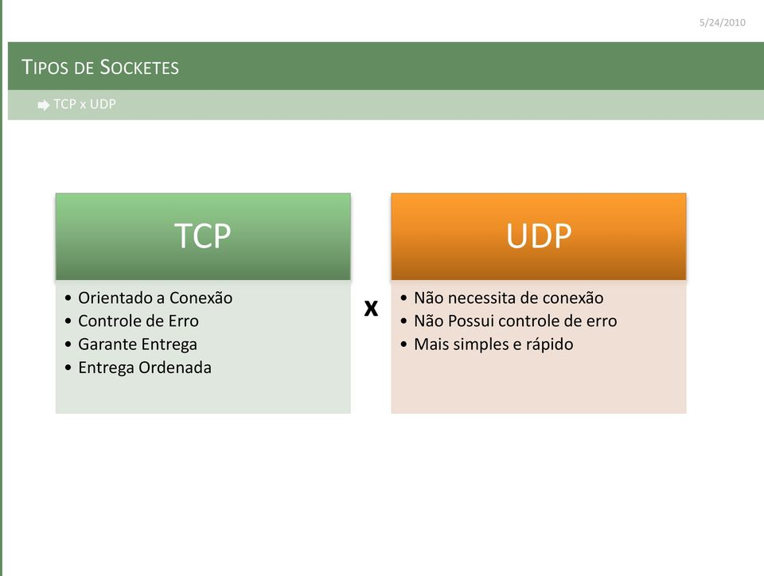
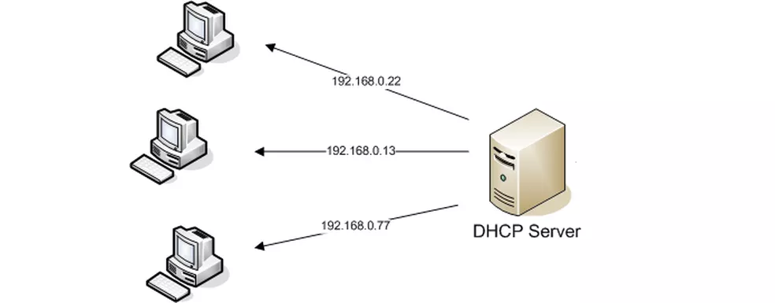

Sistemas de rede
Modelo OSI
Modelo Tcp/Ip
Modelo UDP
Modelo DNS
Modelo DHCP
Modelo FTP
HTTP HTTPS
WebServer
Modelo OSI
O Modelo OSI é um modelo de rede de computador referência da ISO dividido em camadas de funções, criado em
1971 e formalizado em 1983, com objetivo de ser um padrão, para protocolos de comunicação entre os mais
diversos sistemas em uma rede local, garantindo a comunicação entre dois sistemas computacionais.

Modelo Tcp/Ip
TCP/IP é um conjunto de protocolos que possibilita a comunicação entre computadores e servidores, formando
a Internet. Ele combina o Protocolo de Controle de Transmissão (TCP), responsável pela transmissão de dados,
com o Protocolo de Internet (IP), que identificar os computadores e servidores.

Modelo UDP
O que é UDP? O User Datagram Protocol (UDP) é um protocolo de Internet mais simples e sem conexão, no qual os serviços de verificação e recuperação de erros não são necessários.

Modelo dNS
O DNS (Domain Name System – Sistema de nome de domínio) converte nomes de domínio legíveis por
humanos (por exemplo, www.amazon.com) em endereços IP legíveis por máquina (por exemplo,
192.0.2.44).

Modelo DHCP
O protocolo DHCP é um protocolo de cliente/servidor que fornece automaticamente um host IP
(Protocolo de Internet) com seu endereço IP e outras informações de configuração relacionadas, como
a máscara de sub-rede e o gateway padrão.

Modelo FTP
O que é FTP? FTP (File Transfer Protocol) é um protocolo de rede para a transmissão de arquivos
entre computadores. Dentro do conjunto TCP/IP (Transmission Control Protocol/Internet Protocol), ele
é um protocolo da camada de aplicação para o download e upload de arquivos em conexões do tipo
cliente/servidor.

HTTP e HTTPS
HTTPS é uma implementação do protocolo HTTP sobre uma camada adicional de segurança que utiliza o
protocolo TLS/SSL. Essa camada adicional permite que os dados sejam transmitidos por meio de uma
conexão criptografada e que se verifique a autenticidade do servidor e do cliente por meio de
certificados digitais.

WebServer
Um web server é um sistema computacional que hospeda e fornece acesso aos conteúdos e aplicações
através da internet. Geralmente contratado como um serviço, esse servidor recebe e processa as
solicitações feitas por navegadores através de protocolos de rede como o HTTP ou HTTPS.